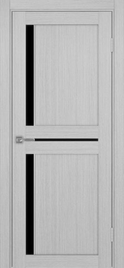

Турин Белый лёд

Особенности
Данная модель выполнена с использованием алюминиевого молдинга.
SB - матовый чёрный, SC - матовый хром. Остекление - стеклопакет.
Конструкция
Дверные полотна серии Турин, имеют царговую (рамную) конструкцию. Царговые дверные полотна состоят из рамы и заполнения.
Рама образована двумя стоевыми царгами и двумя поперечными. Сердечник царги выполнен из древесины хвойных пород по всей её длине и облицован плитой МДФ.
Подобная конструкция обеспечивает хорошую прочность и большие возможности по созданию различных моделей дверей.
Сечение царги составляет - 100*38мм. Плита МДФ - 10мм. Сборка двери осуществляется на четыре березовых шканта и четыре винта размером 6*130мм.
Возможности изготовления этой модели в нестандартных размерах
ширина от 60см./высота до 215см. в диапазоне (60-130)/(160-215) см.
Высота за счет равномерного увеличения/уменьшения верхнего и нижнего заполнения.
Ширина за счет увеличения/уменьшения щитов.
Купить